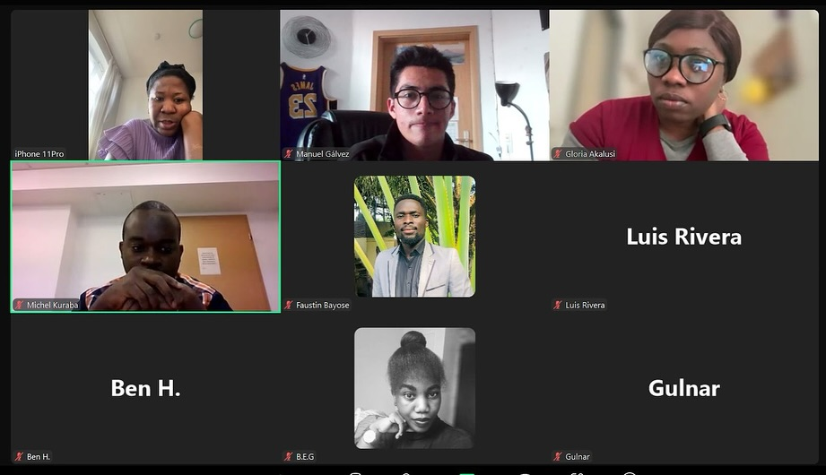
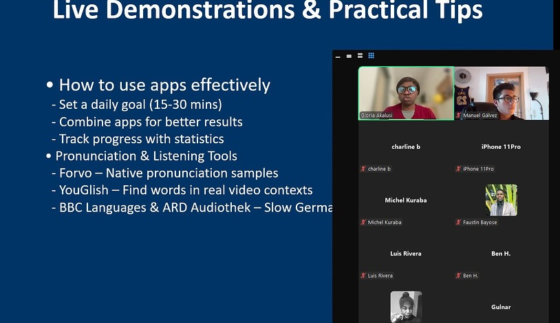
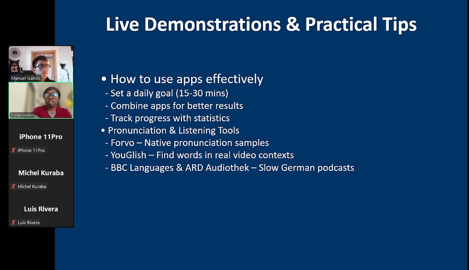

Webinar · Organized by Free European Youth e.V.
The webinar "Digital Tools to Learn German" aims to provide learners with accessible technology-based strategies for language acquisition. It is designed as a practical, free resource to help individuals navigate modern educational platforms and improve their German proficiency.
The event brings together students and educators to explore specific apps and websites that facilitate interactive learning. Participants gain hands-on experience through live demonstrations, learn how to integrate these tools into their daily study routines, and receive expert tips for more effective practice.
The session also promotes a collaborative learning environment by allowing participants to exchange experiences and ask questions during the Q&A. Organized under the Erasmus+ initiative, the webinar supports broader goals of European education and digital literacy for language learners worldwide.
The webinar had a significant impact on participants seeking to improve their German language skills through technology. They acquired a valuable set of digital learning strategies applicable to their daily study routines, particularly for those who prefer flexible and remote education methods.
Participants exchanged experiences with learners from various countries, improving their intercultural communication skills and building a supportive community for future language practice. The project produced a curated list of language apps, practical guides on digital immersion, a shared resource folder on Google Drive, and a recorded demonstration of the most effective tools. Many of the attendees now act as ambassadors of these digital methods within their own local youth groups and educational networks.
"This was such a practical and eye-opening session for my language journey. The webinar completely changed how I look at my daily apps and showed me how to turn my screen time into real German practice." — Mustafa, Türkiye



Follow our social media or contact us to be informed about future activities.